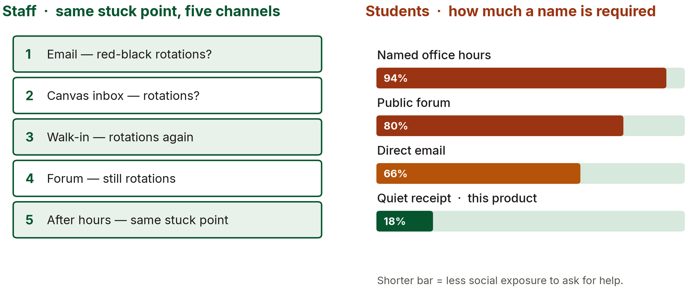
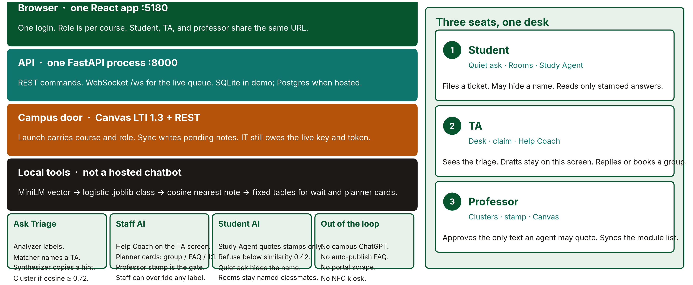
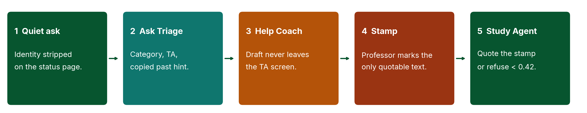
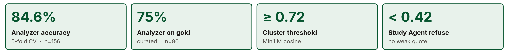
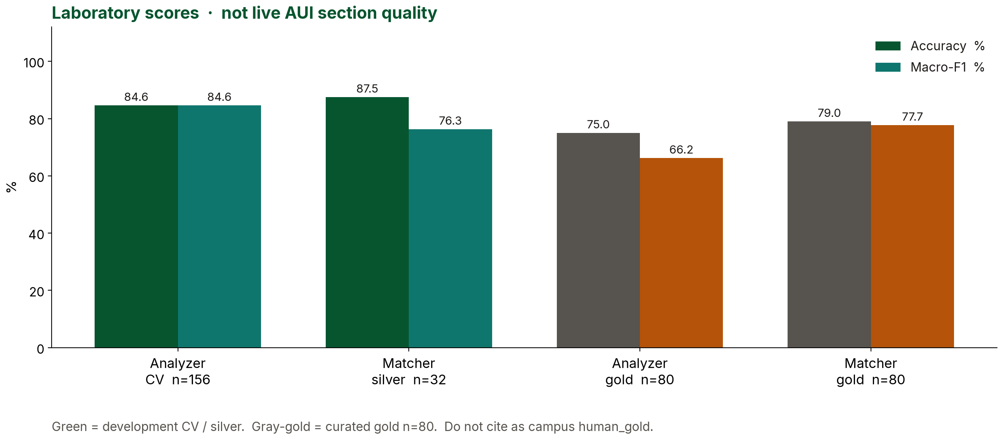

Al Akhawayn University · SSE · CSC capstone
One Canvas-linked help desk. Three seats. A professor stamp before any agent may quote.

Office hours fail two ways: staff hear the same stuck point on five channels; quiet students will not put a name on a public one.
Why it matters: finals week repeats work, extraverted channels leave people silent, and a hosted model can invent a syllabus. This desk keeps a human in the reply and a stamp on anything an agent may say.

React 19 + Vite talk to FastAPI over REST and /ws. Auth is JWT or Canvas LTI 1.3. Demo uses SQLite; a host can set DATABASE_URL to Postgres. The Claude path exists and stays off (OFFICEHOURS_ALLOW_EXTERNAL_LLM=false) on the path users run.

Ask Triage is Analyzer + Matcher + Synthesizer. Cluster if MiniLM cosine ≥ 0.72. Help Coach stays on the TA screen. The stamp is the knowledge gate. The Study Agent searches stamps and refuses below 0.42.


Gold n=80 is curated lab labels, not a live AUI section. Analyzer is 10-way; Matcher is 4-way TA names. Do not call these campus-quality human_gold.
Design-science: one running product, not a paper model. Freeze the loop. Measure synthetic, then silver, then curated gold. Tests lock Quiet identity strip and the classmate-list hide.
Hardware kiosk, NFC or barcode, portal scrape, four backend services, and a hosted LLM on the user path unless the supervisor later opens that gate.
Live Canvas key and token. Optional OpenAI tool calls behind the same stamp and Quiet rules. A 40-label human_gold pass on one real section.